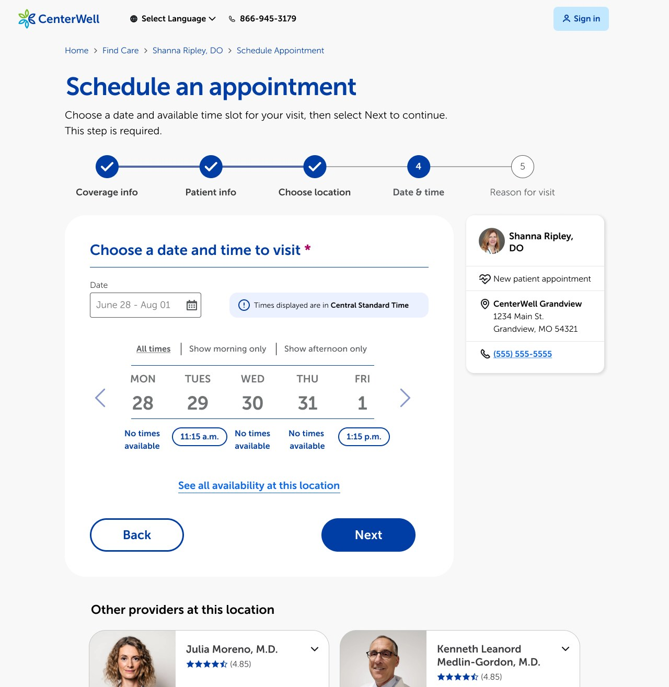
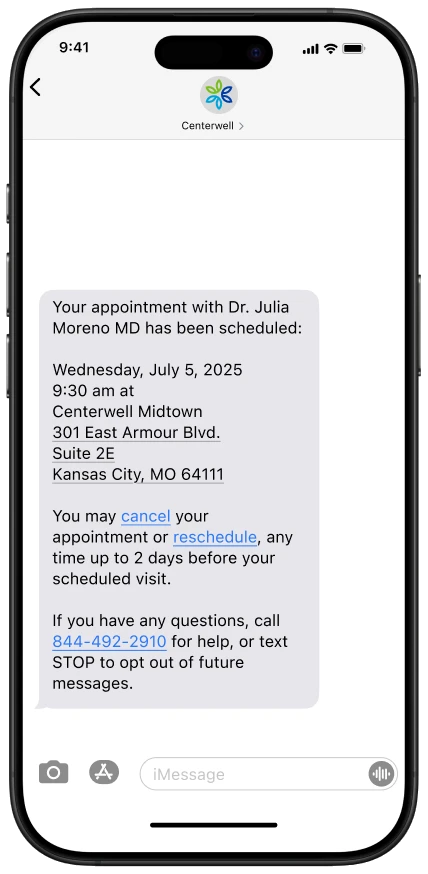
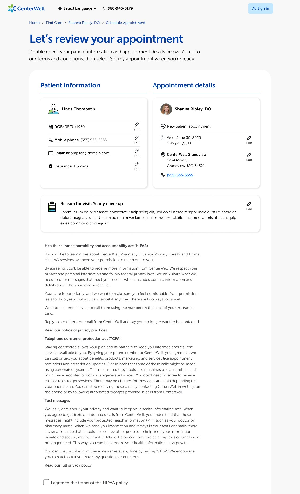

Humana The MVP of a new scheduling platform: new patients book, reschedule or cancel a visit online, with no account and no phone call, on a foundation built to grow.


I.
How might older adults book a doctor’s visit without waiting on hold, or even creating an account? Booking a visit at CenterWell, Humana’s senior-focused primary care practice, usually meant calling in, waiting on hold and hoping to catch a callback. Older adults, flooded with spam calls, often miss those callbacks, and every missed call is a patient who may not book at all. CenterWell set out to build its own scheduling platform across primary care, home health and pharmacy. Our team designed the first release: an MVP that lets new patients book a visit online without creating an account or picking up the phone. It covers the full lifecycle, from finding a provider through managing the appointment afterward, and sets the patterns for every phase that follows.
II.
No sign-up, no log-in. Scheduling starts from a secure link in a text, an email or the CenterWell and Humana Find Care sites. Provider and location details carry over, and patients never sign up or log in. Four simple steps (provider, details, time, confirm) keep the flow short for people who are less comfortable online.
III.
Eligibility and record matching run in real time against the EMR. Ineligible patients get specific guidance instead of a dead end, and existing patients are routed to the patient portal so no duplicate records are created.
IV.
Consent and a choice of text or email are captured inline and required before booking, so compliance is built into the flow rather than added after.

V.
Confirmations and reminders arrive by the patient’s chosen channel, each with a secure one-click link to view, reschedule or cancel.
VI.
An internal rules engine lets operations staff set visit types, durations and provider rules, such as new patients only on certain days, without engineering help. Overrides are logged.
VII.
Outcomes. Zero accounts or passwords needed to book, reschedule or cancel a visit. Four simple steps, from choosing a provider to a confirmed appointment. And one foundation for the later phases: existing patients, brokers, home health, pharmacy and AI-assisted scheduling.
I turned the feature roadmap into end-to-end flows, from provider search through eligibility checks, booking and confirmation; built on the existing Humana Design System to create a guided booking flow that handles eligibility and patient matches; designed visit management by email and SMS; and defined and designed an internal rules engine so operations users can configure the experience from the EMR platform.